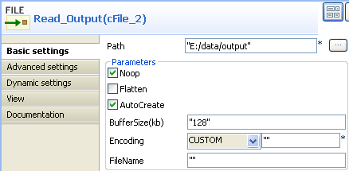
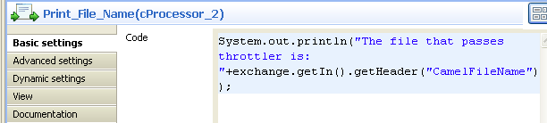
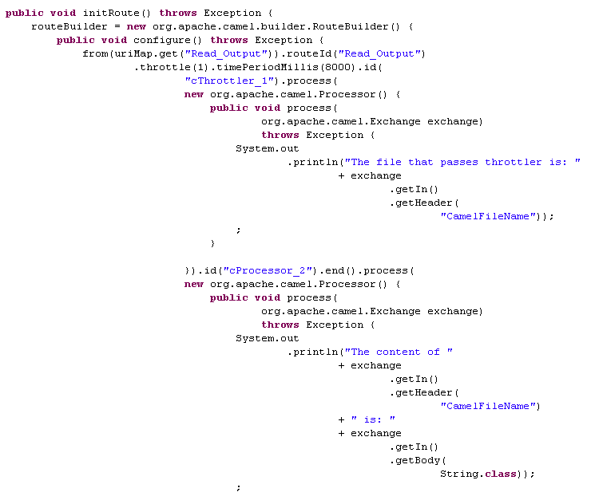

|
Famille de composant |
Routing | |
|
Fonction |
Le composant cThrottler est conçu pour limiter le nombre de messages vers un endpoint spécifique. | |
|
Objectif |
Le cThrottler vous permet de limiter le nombre de messages vers un endpoint spécifique afin d'empêcher cet endpoint d'être surchargé. | |
|
Basic settings |
Request per period |
Nombre de messages pouvant être passés au cThrottler durant une période de temps définie. |
|
|
Set time period |
Cochez cette case pour définir la valeur de la période de temps (en millisecondes) et activer la limite. |
|
|
Use asynchronous delaying |
Si cette case est cochée, les messages retardés seront routés de manière asynchrone à l'aide d'un pool de threads planifiés. |
|
Utilisation |
Le cThrottler vous permet de limiter le nombre de messages vers un endpoint spécifique afin qu'il ne soit pas surchargé. | |
| Connections | throttler | Sélectionnez ce lien pour router les messages ayant été limités vers l'endpoint suivant. |
| Route | Sélectionnez ce lien pour router tous les messages de l'émetteur vers l'endpoint suivant. | |
|
Limitation |
n/a | |
Dans ce scénario, un composant cThrottler est utilisé pour réduire le nombre de messages dans un flux durant une période de temps définie.

Pour construire la Route, procédez comme dans les sections suivantes.
Déposez les composants suivants de la Palette dans l'espace de modélisation graphique : un cThrottler, un cFile et deux cProcessor. Renommez le composant cFile en Read_Output. Changez le nom des deux cProcessor en Print_File_Name et Print_File_Content, respectivement.
Reliez le Read_Output au cThrottler à l'aide d'un lien Row > Route.
Reliez le cThrottler au Print_File_Name à l'aide d'un lien Row > Throttler et au Print_File_Content à l'aide d'un lien Row > Route.
Double-cliquez sur le Read_Output pour ouvrir sa vue Basic settings.
Dans le champ Path, saisissez le chemin d'accès au message source, par exemple "E:/data/output". Laissez les autres paramètres tels qu'ils sont.
Double-cliquez sur le cThrottler pour ouvrir sa vue Basic settings.

Dans le champ Request per period, saisissez le nombre de messages autorisés par période, par exemple 1.
Dans le champ Set time period, saisissez la valeur de la période, par exemple 8000.
Double-cliquez sur le Print_File_Name pour ouvrir sa vue Basic settings.
Dans le champ Code, saisissez le code ci-dessous pour obtenir le nom des messages passant le throttler.
System.out.println("The file that passes throttler is: "+exchange.getIn().getHeader("CamelFileName"));Double-cliquez sur le Print_File_Content pour ouvrir sa vue Basic settings.

Dans le champ Code, saisissez le code ci-dessous pour obtenir le contenu du message passant le throttler.
System.out.println("The content of " +exchange.getIn().getHeader("CamelFileName")+ " is: " +exchange.getIn().getBody(String.class));Appuyez sur Ctrl+S pour sauvegarder votre Route.
Cliquez sur l'onglet Code au bas de l'espace de modélisation graphique pour visualiser le code généré.
Comme affiché ci-dessus, les messages de
Read_Outputpassent lecThrottler_1, avec seulement(1)message autorisé à quitter le throttler durant chaque période de temps (timePeriodMillis(8000)). Pendant ce temps, le nom du fichier et le contenu du message passés dans le throttler sont affichés via les deux cProcessor.Appuyez sur F6 pour exécuter la Route.
Comme ci-dessous, un fichier File_A.txt est livré durant la première période de temps. Durant la deuxième, un fichier File_B.txt est livré.